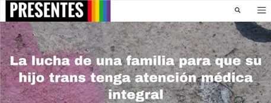
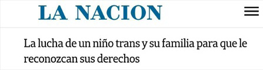
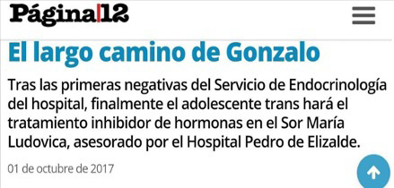

Lo que es preciso defender es el derecho de todo cuerpo, con independencia de su edad, de sus órganos
sexuales o genitales, de sus fluidos reproductivos y de sus órganos
gestantes, a la autodeterminación de género y sexual. El derecho de todo
cuerpo a no ser educado exclusivamente para convertirse en fuerza de
trabajo o fuerza de reproducción. Es preciso defender el derecho de los
niños, de todos los niños, a ser considerados como subjetividades
políticas irreductibles a una identidad de género, sexual o racial.
Paul B. Preciado, 2013
Deseamos de corazón que los adultos seamos algo más que obstáculos
para los niños.
(Susana y Mauro, Carta pública al Hospital Sor María Ludovica)
El presente capítulo tiene por objetivo la reconstrucción de la trayectoria de audibilidad de Gonzalo. Hacemos referencia a la noción de trayectoria recuperando los desarrollos de Claudia Teodori (2015),1 quien se refiere a cómo se conjuga la vivencia subjetiva y las respuestas institucionales en el acceso a la salud mental en personas que han vivenciado violencias por razones de género. Consideramos que a partir de las experiencias de Gonzalo podemos identificar cómo la asunción de la identidad autopercibida es sancionada por las instituciones, lo que conlleva al despliegue de estrategias disidentes de ejercicio de cuidado.
Nos centraremos en la voz de Gonzalo. A partir de su experiencia respecto a la autopercepción de género, nos centraremos en la voz de Gonzalo,2 la cual se relaciona directamente con el derecho a ser escuchade. El ejercicio pleno de este derecho refiere a una idea de autonomía que involucra otros derechos (económicos, sociales, culturales, a la justicia) y que para esta tesis vinculamos especialmente con el derecho a la salud mental.3
Además, este capítulo presenta como desafío reconstruir el modo en el que ser nombrado para Gonzalo fue un largo camino en el que intervinieron diversos actores, que por un lado lo hicieron posible, y que, por otro, se opusieron a garantizar un trato digno para los existenciaros trans (Berkins, 2013).
A partir de lo que Gonzalo denominó su “salida del closet como trans”,4 es posible situar la trama de hacer audibles sus derechos en la escena de lo público, lo privado y lo íntimo. Dentro de lo público, es posible delimitar la relación de les actores estatales del hospital público frente a su asunción identitaria, nos referimos al hospital Sor María Ludovica, en tanto referente de un Estado punitivo frente a las fronteras sexuales (Sabsay, 2011) y las identidades autopercibidas. Cuando nos remitimos a lo privado hacemos referencia a los procesos por los que atravesó Gonzalo con sus grupos de pertenencia más cercanos: procesos de cuidado de sus referentes afectivos Susana, Mauro y Abril, y a los colectivos disidentes que tejieron el ejercicio de cuidado colectivo.5 Al escribir sobre lo íntimo, damos cuenta de los procesos y mecanismos psíquicos en juego en el devenir Gonzalo, la dimensión sexo-afectiva y los lazos sexo-afectivos6 a partir de la expresión de sus emociones y deseos en su trayectoria de audibilidad, que sitúan a Gonzalo como un sujeto activo respecto de construir los espacios para hacer que su voz sea oída.
En cuanto a lo íntimo, damos cuenta de los procesos a partir de los cuales se configura una narrativa subjetiva de afrontamiento del devenir Gonzalo y cómo ello exige la reconfiguración de un lugar de enunciación.
Por otra parte, la dimensión del cuidado aparece en este caso en las estrategias colectivas de acompañamiento del colectivo trans y otrxs xadres con niñes que enfrentaron la situación del abordaje institucional en materia de la salud de sus hijes trans.
Gonzalo tenía 12 años cuando decidió contarles a sus xadres, que ya hacía un año que venía construyendo una identidad de género disidente. De esos momentos Gonzalo invocó muchas afectaciones entre las que destacó la disforia. Al ser entrevistado, él7 nos situó que cuando hizo visible su identidad de género para su entorno familiar y de amigues, pasó por un proceso “raro”, que salió bien.
En función de sus apreciaciones considera que fue una suerte tener xadres “progres” y que no se lo tomaron a mal en ningún momento. La experiencia de salida del armario es muy significativa porque nos permite comprender las vivencias singulares de este proceso desde la perspectiva de Gonzalo. Él salió del armario como trans con menos amigues de los que tenía antes. Pasado un tiempo de encontrarse con su nombre Gonzalo, empezó a pedir que lo llamaran así, y que usaran para referirse a él pronombres masculinos, hecho que lo ayudó mucho en su transición social:
tenía mucho miedo de decirles ‘por favor díganme estos pronombres sí o sí todo el tiempo’ entonces les decía no sé ‘cuando te salga’, y nunca sale porque hace once años que me venían diciendo con pronombres femeninos, no sale natural. Entonces fue, no me acuerdo si primero los pronombres o primero el nombre hasta que llegamos a Gonzalo, pronombres masculinos. (Entrevista a Gonzalo, mayo de 2020)
El “salir del armario como trans” cuestionando el estatuto de lo esperable para la niñez configuró un panorama en el que los derechos de Gonzalo fueron puestos en cuestión. Son innumerables las situaciones por las que atravesó con su grupo familiar, donde los espacios públicos como escuelas, organismos registrales y hospitales funcionaron como escenarios en los que él tuvo que volver a conquistar sus derechos.
Socialmente pasas a estar por fuera, Gonzalo se tuvo que cambiar de escuela, y toda esta problemática a nivel salud fue de lo más complejo, de golpe él, de un día para otro dejo de poder acceder a los servicios de salud, de golpe tuvimos que empezar a pelear para que él pueda ser nombrado, cuando no había sido un tema hasta ese momento, perdió el derecho a la identidad de algún modo, todos sus derechos que hasta el día anterior los naturalizábamos pasaron a ser luchas, derechos a conquistar nuevamente. (Entrevista a Susana, mayo de 2020)
Aquello que Susana nos plantea respecto del niño en la entrevista da cuenta de cómo el hecho de “estar por fuera” se articula con la imposibilidad del ejercicio de ciudadanía para les niñes trans, se sostiene como aquello que traza las dificultades en torno a las experiencias institucionales de les mismes. Cuando nos referimos a ciudadanía, nos remitimos en su acepción referida al máximo estatus de derechos (Ferrer Araujo, 2010), en donde se sitúan a les niñes no sólo como sujetes de derechos, sino como personas que se relacionan de distintas maneras con el Estado, relaciones civiles, colectivas y sociales, no se reducen sólo a lo político. Entonces, lo que sitúa la entrevistada en relación al “estar por fuera” remite además a como en este caso el Estado, las instituciones obturan para la niñez trans la posibilidad de inscribirse en esos procesos que hacen al ejercicio de la misma.
En este sentido, el acceso a la salud configura un elemento sine qua non para el ejercicio de la ciudadanía, no sin entender a la identidad de género como parte de la misma, por ello resulta necesario desandar los obstáculos cisexistas que se sostienen en los servicios de salud que obturan el ejercicio de la ciudadanía a partir de sesgos asociados a la matriz de inteligibilidad con la que cuentan quienes integran el Estado.
Justamente, la lucha de las niñeces por la conquista por sus derechos se despliega en los espacios públicos y privados porque, para el mundo adulto, y centralmente para el Estado, estos sesgos cisexistas contruyen lugares ininteligibles para los existenciarios trans (Berkins, 2013).
En este punto, es central, dar lugar a aquellos aspectos que bordearon la experiencia de esa niñez a partir de los espacios públicos por los que transitó. Estos espacios producen subjetividad, son, en efecto, condiciones de posibilidad para el ejercicio de la salud como derecho. Configuran trayectorias institucionales (Teodori, 2015) por los que usualmente la niñez trans atraviesa, no sin producir efectos, significaciones –en torno a su identidad, roles de género, etc.– padecimientos, y experiencias atípicas con relación a otras.
En la Argentina, a partir del art 12. de la LIG las escuelas, hospitales, y organismos registrales son esenciales para determinar las garantías en el desenvolvimiento y ejercicio del derecho a la identidad de género. La respuesta que dé el Estado a las trayectorias y experiencias de estas niñeces y adolescencias, con sus matices, sostendrán marcas en la construcción de su identidad. De este modo, se vuelve necesario que el Estado mediante sus efectores, en este el servicio de salud mental de Hospital y sus trabajadoras, instituyan un espacio seguro, eviten ser obstáculos en procesos subjetivos, identitarios, psicosexuales, propios de esta etapa de la vida, procesos que se encuentran intrínsecamente ligados a la posibilidad de ejercer su derecho a la salud mental.
El hospital Sor María Ludovica, era y aún sigue siendo el lugar elegido por la familia de Gonzalo para el ejercicio del cuidado de su salud, cuestión que no asumió ninguna barrera respecto del acceso hasta que él hizo visible su expresión de género, y que decidió ser nombrado a partir de su nombre autopercibido.
A partir de la respuesta de una de las médicas perteneciente a la especialidad de endocrinología del hospital (que inicialmente iban a atenderlo a él y su familia), es que se dio la primera negativa. Allí inició el trayecto de vulneración8 en el acceso del derecho a la salud de Gonzalo y sus referentes afectivos. En la entrevista, Susana la mamá del niño nos decía:
Entonces, fuimos al Hospital de Niños a endocrinología, en principio, nos atiende una médica. Llegó a esa médica porque su dermatóloga era médica del Hospital, bueno la cuestión es que ella en un momento cuestiona cómo va el tratamiento “¿cómo esto no lo ve un pediatra?”, y bueno ahí hago salir a Gonzalo y me pongo a llorar, y le digo “no estoy logrando que ningún médico lo atienda”, ella se conmueve, y habla con una médica que era endocrinóloga y logramos que nos den una entrevista. En esa entrevista con esa endocrinóloga, la mejor, todo bien, me dijo “yo nunca hice tratamiento de inhibición hormonal particularmente en el marco de la ley de identidad de género, pero si hacemos de inhibición hormonal por otros motivos, pero bueno me voy a poner a investigar un poco”, la consulta siguiente directamente fue encerrada en un lugar con la jefa de servicio, diciendo que ella no estaba de acuerdo, que ella decidía que pacientes tomaba y que pacientes no, fue terrible, una discusión de dos horas con tres médicos diciéndome que no iban atender a mi hijo. (Entrevista a Susana, mayo de 2020)
Al modo de un efecto dominó diferentes servicios de salud del hospital comenzaron a plantear con diversos fundamentos que no “se encontraban equipados” para garantizar el acceso a la salud de Gonzalo, diferentes servicios del hospital. Asimismo, hay dos aspectos centrales de la trayectoria institucional de Gonzalo. Por un lado, la ausencia de cuestionamientos en torno al efecto performativo de los diagnósticos y de las prácticas médicas. Y por otro, es evidente la ausencia del enfoque de género en los servicios del hospital, que posibilitará matizar en sus intervenciones, si se considera, como es planteado por la OMS, al género como un determinante de la salud, que aumenta la tasa de exposición a la vulnerabilidad.
La respuesta por parte de la médica “me voy a poner a investigar”, da cuenta de la ausencia de formación, pero además de la poca intencionalidad en hacer lugar a prácticas que den lugar al género como un determinante de salud, recordemos que el hecho les sucede luego de cinco años de la sanción de la LIG, existiendo ya una guía nacional de atención en salud de la población trans, que establece lineamientos claros respecto a la asistencia específicamente para endocrinólogos.
La objeción de la médica no parece una decisión aislada, cuestión que luego es notoria debido a que otros servicios se unen en el ejercicio de violencia que violó los derechos de Gonzalo, no sólo a la salud, sino el derecho a la identidad de género, en el hecho de por ejemplo, insistir junto a otres en no nombrarlo con su nombre autopercibido. Hecho que da cuenta del desconocimiento de la LIG, pero además de la ausencia de interés en saber qué era aquello de su práctica que debía modificarse para no estar vulnerando los derechos de ese niño.
Desde la reunión en la que se hace efectiva la negativa, comienza el despliegue de estrategias por parte de les xadres de Gonzalo para lograr ser atendidos en ese hospital que era, en efecto, el lugar de referencia hasta el momento para él y su familia.
Cabe entonces, con el análisis de las estrategias de les xadres en tres ejes: 1) público en medios, frente al hospital 2) en la comunidad LGTBIQ+ 3) frente a Gonzalo y sus afectos.
El caso del Hospital cobró relevancia mediática pasado un tiempo desde la negativa, tiempo que es marcado en el testimonio de Susana como un momento de cuidado respecto de aquello que el Estado le estaba negando a Gonzalo, la posibilidad de ejercer la ciudadanía. La ciudadanía entendida en los términos referidos al conjunto de derechos que comprenden las dimensiones, civiles, sociales, personalísimas tales como la cuestión de la identidad sexual y los vinculados a la soberanía del cuerpo, un amplio espectro que contiene, además de los derechos políticos, los de naturaleza social, cultural, identitaria y de reconocimiento (Barrancos, 2011).
Los referentes afectivos de la niñez en cuestión tenían claro que a partir de allí les esperaba un largo camino para lograr que el hospital adecuara sus prácticas de manera respetuosa frente a las identidades autopercibidas y a la normativa vigente. Asimismo, la trayectoria de audibilidad de Gonzalo fue una de las principales preocupaciones de les xadres de Gonzalo. Para ello tuvieron que tomar decisiones acerca de las estrategias que llevarían a cabo, el horizonte fue tomar los caminos que menos vulneren a su hije, y que “sean la puerta de entrada para que otros niños no tengan que pasar por lo mismo” (Entrevista a Susana, mamá de Gonzalo).
Es así como decidieron presentar una carta pública al hospital, y tomar una estrategia que sería impulsar su pedido articulando con los sectores que entendían su reclamo, entre los que se encontraban sindicatos, activistas LGTBIQ+, referentes en la temática, entre otres. Con todes estes actores en escena, el caso del hospital cobró relevancia en los medios de comunicación periodísticos locales y nacionales, la mayoría de los titulares apoyando el reclamo de la familia. La repercusión mediática, puso en agenda el tema pero además ayudó a la familia de Gonzalo a traccionar para que el hospital y diferentes sectores del estado tomen cuenta la gravedad de la situación. Diferentes medios periodísticos nacionales dieron seguimiento a los avances del caso.
En la carta que se “hizo viral” en redes sociales (Twitter, Facebook, y WhatsApp) titulada “Los derechos de Gonzalo” se enunciaban una serie de reivindicaciones que como xadres del niño exigían al Estado. Se expusieron las circunstancias que formaron parte del tránsito por los espacios públicos luego de la “salida del armario como trans” de Gonzalo, entre las que se detallan las consecuencias que la decisión del hospital estaba teniendo sobre el acceso a los servicios de salud, sustanciales para el ejercicio del derecho a la salud. En esta carta les xadres de Gonzalo expresaban:
Le pedimos al Hospital de niños de La Plata que abra la puerta, que atienda a nuestro hijo como a cualquier otro niño. Que respete su nombre, y su identidad de género como expresa la ley, y lo respete como persona como es su derecho. Le pedimos que deje de ser parte del sistema de exclusión que condena a las personas trans a la clandestinidad, al guetto y a la muerte por causas evitables. (Carta Abierta al Hospital de Niños, xadres de Gonzalo, 2017)
En este largo camino, los medios de comunicación más importantes de Argentina –de diferentes tintes ideológicos y sectores políticos– levantaron la noticia, la mayoría de sus titulares hicieron hincapié en los cuidados que mantuvieron les xadres, como vemos en las imágenes 1 a 3. Asimismo, el énfasis estuvo puesto en lo que estaba haciendo el hospital, desacreditar la voz de Gonzalo en relación con la construcción de su propia identidad, poniendo en tensión el género y la edad que, en intersección, funcionan como sistemas de subordinación.

Imagen 1. Anita Aliberti, (2017, 30 de septiembre), La lucha de una
familia para que su hijo tenga atención médica integral, Agencia
Presentes.

Imagen 2. Stephie Chernov (2017, 4 de octubre), La lucha de un niño
trans y su familia para que le reconozcan sus derechos, La
Nación.

Imagen 3. Página 12 (2017, 01 de octubre) El largo camino de
Gonzalo. Página 12
En su entrevista Susana cuenta que fue central que Gonzalo formara parte de todas las acciones que llevarían a cabo, que sea parte con su voz de las decisiones, cuestión muy relevante que muestra cómo elles estaban dando lugar a él como sujeto de derechos, manteniendo un marco subjetivante que tenía en cuenta que detrás de esto había un niño con una opinión respecto de sus derechos, y de cómo ejercerlos. Esto puede verse en este fragmento de su entrevista:
En ese momento hablamos con Gonza, y le explicamos que estábamos teniendo problemas con acceder al tratamiento y que habíamos hecho muchas cosas que no habían funcionado hasta el momento, y habíamos decidido hacerlo público para poder presionar más como una estrategia, y lo que le explicamos es que no se trataba de él, es una lucha por los derechos de les niñes en general, pero que estratégicamente en ese momento hacerlo público particularmente lo de él, servía. Como para que no lo tomará tan personal, para nosotros es fundamental eso, que él entendiera que no se trataba de él nada más, es lo que nosotros fuimos entendiendo para cuidarlo, de que cada una de las peleas se transformará en una política pública, entonces generamos toda una estrategia con algunos periodistas aliados, lo que hicimos es escribir una carta y hacer pública esa carta, tuvimos la suerte que se viralizó, e hicimos quinientas mil notas para presionar. (Entrevista a Susana, mayo de 2020)
En la entrevista Susana referencia sobre las estrategias que desde el ejercicio de cuidado (Colanzi, 2018) sostenían como xadres, y cómo inician las alianzas, con les periodistas (quienes no serían les uniques con quienes las mantendrían), hecho que pasado tiempo de lo acontecido es leído por ella como algo que funcionó para que su hijo pueda ejercer sus derechos.
El ejercicio de cuidado (Colanzi, 2018) que les referentes afectives de Gonzalo mantuvieron durante todo el proceso, desde la negativa de los diferentes servicios hasta que lograron que el hospital participara en una mesa intersectorial (abogades, médiques, gremios) fue determinante para generar las condiciones para que el Hospital de marcha atrás respecto de su postura.
Finalmente, uno de los abogados del hospital de niños dice “si, bueno, parece que se están violando los derechos del niño” y al final terminan aceptando. La primera propuesta fue que entrara de nuevo con otro diagnóstico, que entrara por salud mental, nosotros nos negamos a eso, hasta que terminaron aceptando todas las condiciones que eran que: entren por pediatría o adolescencia, como cualquier chico, y que no queríamos que tuvieran contacto con las personas que se habían negado con nuestro hijo, ni con ningún chico trans. (Entrevista a Susana, mayo de 2020)
Es necesario situar, la convicción del hospital en sostener su postura de no atención. La entrevistada nos cuenta que la discusión con elles y el resto de les actores institucionales duró más de tres horas, con la presión de que los medios de comunicación se encontraban “afuera de las puertas”9 esperando una resolución para comunicar cómo seguía, asunto que se vincula con la resolución y con el hecho de que les abogades del hospital reconozcan que se estaban violando derechos. Las estrategias que como xadres del niño tomaron, tuvieron desenlace favorable, que devino en la posibilidad de que Gonzalo, siga siendo usuario del Hospital como hasta antes de “salir del armario como trans”.
Como consecuencia, las acciones pusieron un límite a que sus derechos como niñe sean puestos en cuestión, pero esencialmente, la institución modificó sus prácticas y constituyó un equipo interdisciplinario bajo el prisma de los derechos amparados en la ley de identidad de género. En el último capítulo revisamos algunas de las prácticas e intervenciones de los profesionales de hospital, a los fines de dar cuenta como fue metabolizada por la institución esta experiencia.
Desde el campo de estudios de la medicina se ha generado un lenguaje común para entender lo humano, que legítima y que sentencia generizando los cuerpos que advienen al mundo, esta producción de sujetos generizados (Butler, 1993) ha sido históricamente desde estándares binaristas (Kim Perez Fernández-Figares, 2010) dejando sólo como posibilidad de existencia la cisgeneridad, intentando corregir o normalizar formas de existencia por fuera de aquellas invenciones (varones y mujeres). Estos discursos, ejercidos desde las ciencias médicas, configuran el Modelo Médico Hegemónico (Menéndez, 2003). Puede definirse como el sistema de poder que determina qué es salud y qué es enfermedad. Es un modelo que posee como rasgo estructural dominante al biologicismo que “es uno de los factores de exclusión funcional de los procesos y factores históricos, sociales y culturales respecto del proceso salud/enfermedad” (Menéndez, 2003).
Desde el surgimiento del capitalismo, los modos de subjetivación y objetivación de los dispositivos de la sexualidad moderna están enlazados a sistemas de poder que determinan una lógica biologicista que supone al sexo como biológico, lo que designa si una persona es varón/mujer para el discurso médico es la genitalidad. Es a través de esta sentencia respecto de ese cuerpo, en suma, con la presunción futura de heterosexualidad ligado al sostenimiento de dispositivos propios, que todo aquello por fuera es considerado anómalo. Así, la concepción de la homosexualidad, transexualidad, disforia de género como enfermedad, o como algo que es en sí mismo una cuestión de salud mental, hunde sus raíces en los manuales médicos de diagnóstico, como es el caso del DSM en todas sus variantes, en el que -por ejemplo- la homosexualidad persistió hasta 1973 en la sección de “desviaciones sexuales” como una categoría de enfermedad mental.
De esta forma, desde el modelo médico hegemónico, lo psicológico y social del padecimiento quedan subordinados o excluidos poniendo el eje en la dimensión anatomofisiologica de los procesos de salud y enfermedad. Es así, que a partir de diferentes estudios realizados a lo largo de la región10 es posible dilucidar que los obstáculos respecto del acceso a los dispositivos de salud se asocian, por un lado, a la cuestión de la presunción de la heterosexualidad y cisgeneridad, así como con la ausencia de formación de profesionales sobre abordajes de salud sostenidas en la no discriminación y el trato digno a usuaries pertenecientes a poblaciones no cis-heterosexuales.
El sexo es un discurso histórico, sostenido en una base social, pero que se ampara en el discurso de la biológica, permite el análisis de los cuerpos partiendo de un principio que se presenta ante todes como estable, con marcada presunción de neutralidad. La idea central es mirar las constituciones de los cuerpos sustentada por el discurso tecno-científico, obviando de manera deliberada que la naturaleza misma tiene una historia y que no existe en el mundo de lo simbólico y por extensión en lo real, ningún sujeto que preexista a las significaciones de género (Butler, 2006).
Esto significa que, no existe naturaleza del sexo, sino discursos de género que materializan en los cuerpos una idea histórica de naturalización del sexo que contiene los cuerpos con género (Butler, 2001).
En el caso de la negativa del hospital Sor María Ludovica, y de la objeción en particular de la médica endocrinóloga, sostenían que Gonzalo no poseía ninguna enfermedad, lo que puede parecer un posicionamiento despatologizante pero que en realidad encubría fundamentos que se sostienen en dos preceptos: por un lado que el niño no posee autoridad epistémica11 (Peréz, 2019) sobre sus propias vivencias, y por otro que se asiste a los servicios de salud sólo por cuestiones asociadas a enfermar y no por el contrario, como ejercicio del derecho a la salud.
Entonces, ¿cuáles son los criterios a partir de los cuales la médica y consecuentemente el hospital, restaba autoridad testimonial produciendo una violencia epistémica (Medina, 2017; Peréz, 2019)12 contra este niño en razón de negarle el acceso a los tratamientos previstos en la ley de identidad de género? ¿Cuál es el impacto para la niñez de que el Estado ejerza violencia epistémica respecto de las vivencias de Gonzalo? Lo acontecido da cuenta de la operatoria eficaz del Modelo Médico Hegemónico. Además de que la concepción del proceso salud/enfermedad, dónde lo biológico, la genitalidad, y aspectos asociados al cisexismo13 cobrarían más importancia que encontrar una salida favorable para los derechos de Gonzalo.
Una propuesta que resulta interesante recuperar en este apartado es la de An Millet, activista trans que llevó adelante una investigación14 que arrojó los siguientes resultados: mover el foco con relación a qué es lo que investigamos quienes nos involucramos en temas asociados a la salud de las personas trans. Habitualmente, se pone el foco en la población y no así con quienes desde sus intervenciones sostienen prácticas de discriminación y exclusión de estos dispositivos. Este autor, toma las ideas en torno a la despatologización (Suess, 2011) de las identidades trans, que encaminan la posibilidad de erradicar la creencia (y consecuencias materiales) que implican que ser una persona trans supone padecer una enfermedad. Propone la descisexualización (An Millet, 2018), en el siguiente sentido:
Propongo la descisexualización como un movimiento más amplio que no se circunscribe únicamente a la perspectiva patologizante, sino que pretende eliminar las producciones simbólicas y materiales basadas en la idea de que las personas cis son más valiosas que las personas trans. En la actualidad, cuando hablo de descisexualización me refiero al proceso necesario de desaprendizaje y desmantelamiento de concepciones y prácticas cisexistas. (An Millet, 2017, 2018)
Este proceso descisexualizante supone una serie de acciones entre las que se identifican, por un lado, el análisis de los supuestos y prejuicios que sustentan el sistema cisexista, acompañado por la descripción de los mecanismos de producción y reproducción de estos supuestos y prejuicios (An Millet, 2018). Y, por otro lado, la examinación y visibilización de la distribución desigual de capitales que el cisexismo arbitra entre las personas a partir de su identidad o de la forma en la que la misma es percibida (An Millet, 2018).
Es interesante situar al cisexismo, como una noción a partir de la cual es posible hacer pensable aquellas aristas de este caso en los que la intervención del mundo adulto con respecto de la niñez que sitúa un ser/hacer identificatorio distinto al esperado, irrumpe sobre las expectativas de que él, ejerza con autonomía progresiva ciertos derechos.
A partir de este estudio se identifica que, para Gonzalo, como lo es para otres niñes trans, el espacio público no configura un lugar seguro en tanto les adultes no generan las condiciones de hacer audible la vivencia interna en relación con su identidad de género, muchas veces por restar autoridad epistémica sobre los testimonios de sus propias experiencias ¿De qué modo nombramos la acción de desacreditar la voz de les niñes respecto de sus propias vivencias? ¿Nos encontramos ante una injusticia epistémica?
La noción de injusticia epistémica (Miranda Fricker, 2007) refiere sobre los ejercicios de poder por los cuales quien es oyente desacredita el testimonio de quien es hablante, mayormente por causa de la pertenencia de este último a un grupo determinado, y de los prejuicios identitarios que el primero alberga en su imaginario. La clase de injusticia a la que Fricker dedica mayor atención es aquella que se produce cuando un prejuicio conduce a un oyente a otorgar un nivel injusto de credibilidad al conocimiento de un hablante. Este desnivel puede ser deflacionario, con la consecuencia de que se niega la capacidad del hablante en su calidad de sujeto epistémico (por ejemplo: “los niños no saben lo que quieren”). La injusticia que resulta de este fenómeno tiene efectos tanto en la jerarquía social, como en la confianza de los agentes respecto de sus capacidades.
En la misma línea la autora Miranda Fricker (2007) sostiene la noción de injusticias hermenéuticas (Fricker, 2007), sostiene que las mismas son producto del fenómeno por el cual los recursos hermenéuticos colectivos existentes pueden tener una laguna allí donde debería estar el nombre de una experiencia social específica15 (Fricker, 2007), en el caso de esta investigación nos referimos a la vivencia íntima de Gonzalo.
Las producciones teóricas de esta autora sostienen que el oyente se rehúsa a tomar en cuenta toda evidencia que contradiga sus preconcepciones prejuiciosas, y que por su parte el hablante mantiene dificultades para lidiar con la injusticia frecuentemente no cuenta con herramientas simbólicas que amplíen los marcos interpretativos para reconocer que está viviendo una injusticia. En tal sentido, cabe señalar como interrogante central para esta investigación ¿es posible que estemos desoyendo a la niñez trans? Gonzalo nos deja pistas sobre ello:
Al hospital le sugiero tomar cursos o leer, me gustaría que nadie más que vaya al Hospital tenga que ser la persona educando a los médicos o psicólogues y me gustaría en general si tiene que pasar por eso que tengan más tacto, en cuanto a que es un paso importante para la vida de une niñe o adolescente y en general es eso más información, respeto no es, porque yo fui respetado solo que nunca me gusto estar en el punto de estar educando a les adultes sobre cosas que yo sentía que ya deberían saber. (Entrevista a Gonzalo, Mayo 2020)
Fricker analiza las injusticias a través del “poder identitario”, en tanto forma de poder social que depende de las imágenes compartidas por la sociedad acerca de la identidad; del “prejuicio identitario”, como un prejuicio ejercido contra las personas en cuanto pertenecientes a un grupo social; y la injusticia testimonial, donde el hablante es violentado por recibir menos credibilidad por parte del oyente. Ambos tipos de injusticias están vinculadas con la identidad, el prejuicio y la discriminación. No obstante, que las acciones y prácticas de injusticia epistémica no sean deliberadas, no implica que quienes la ejecutan carezcan de responsabilidad al respecto.
Gonzalo ubica en su “salir del armario como trans” (Entrevista a Gonzalo, mayo de 2020) diferentes movimientos que guardan como escenario lo público, lo privado y lo íntimo. El armario o closet es recogido por la literatura como un mecanismo de poder que disciplina los cuerpos generando control sobre ellos, opera como un regulador del placer que fomenta, además, el individualismo, el machismo y la homofobia, funcionando como guardián de la heteronorma (Siqueira Peres, 2013: 35) .16
Es un tema trasversal en esta investigación las repercusiones públicas, privadas e íntimas de hacer visible y audible su vivencia íntima respecto de la identidad de género por fuera de la cisgeneridad de Gonzalo. En lo que respecta al espacio público es ineludible hacer observancia del impacto de esta visibilidad sobre los aspectos asociados a la accesibilidad (Ferrara, 1985) de la educación, la salud, etc. y el modo en que dicha niñez atraviesa por ellos.
Es en el espacio público que les ciudadanes conquistan sus derechos y los ejercen, los defienden y los amplían, es donde también se le dio la negativa del Hospital Sor María Ludovica diciéndole “Acá no lo vamos a atender”, y es a partir de ese hecho que él y su familia comienzan su lucha para ser tratado dignamente bajo los derechos amparados en ley de identidad de género, cuestión abordada transversalmente en estas tesis.
El espacio público no es solamente un derecho específico, es también un factor esencial para el ejercicio de otros derechos, sociales, culturales, económicos y políticos. El espacio público forma parte de la escena donde el derecho plural y performativo a la aparición (Butler, 2015) se pone en acto, un derecho que afirma e instala el cuerpo en medio del campo político, y que, amparándose en su función expresiva y significante, reclama para el cuerpo condiciones económicas, sociales y políticas que “hagan la vida más digna, más vivible, de manera que está ya no se vea afectada por las formas de precariedad impuestas” (Butler, 2015).
A partir de este estudio, centralmente en las entrevistas del grupo familiar de Gonzalo, es posible enumerar algunos derechos que fueron vulnerados en el espacio público: el ser nombrade, la salud, etc. De ello Susana, nos plantea que a Gonzalo les fue vulnerado:
El acceso a la salud, el derecho al respeto, el derecho a la identidad, como derecho humano directamente, el derecho a la educación, determinados derechos civiles, en su momento fue muy difícil que le hagan el cambio registral que, ahora ya hay todo un circuito de cómo se hace. Todo lo que se desprende de ser vulnerado su derecho a la identidad, si vos no tenes derecho a la identidad, no tenes derecho a nada, ni siquiera sos nombrado. En el hospital dejó de tener derecho a la salud, a ser nombrado, a ser respetado, a ser cuidado. Nosotros siempre planteamos que se vulnera no sólo la ley de identidad de género, sino que se vulneran los derechos del niño. (Entrevista a Susana, mayo de 2020)
Vemos como se hace evidente que las prácticas e intervenciones de índole cisexista tiene un impacto directo sobre la manera en la que se desenvuelve la autonomía progresiva en razón a la posibilidad de ejercer derechos humanos, el ser nombrado, posibilidad inalienable que se articula con el trato digno y respetuoso ante cualquier situación intersubjetiva. En este caso, lo que nos importa es señalar que quien ejercía tan marcada violencia era alguien que opera como un efector del Estado, y que por consiguiente se interponía en la posibilidad de ejercer el derecho a la salud. Las palabras de Gonzalo son contundentes:
en ese momento no tenía DNI, primero fue esa frase que salió en todos los diarios; “Acá no lo vamos a tratar”, no me estaban diciendo con mis pronombres, nos dijeron como que no, no me iban a tratar, el por qué fueron muchas excusas distintas, algunas eran que no estaban equipados para tomar mi caso, pero después nos dimos cuenta que fue la primer reacción que tuvieron con mucha gente trans, que habían sido tratados pero no correctamente, o sea sin cambiarles el nombre, darle tratamiento bajo otro nombre, nunca habían atendido legítimamente en el sistema y por eso se les hacía mil veces más difícil a las personas trans que iban, pero la mayoría conseguían un doctor piola que no podía decir lo que estaban haciendo. (Entrevista a Gonzalo, mayo 2020)
Para las personas trans, como lo es para cualquier persona, que te nombren por tu nombre autopercibido cobra un tenor central para la construcción de la propia identidad. Invito a les lectores a que hagan el ejercicio de pensar cómo sería vivir en un mundo donde utilicen para nombrarles pronombres y nombres con los cuales no se sienten identificades. Allí, en esa escena, radica la experiencia de las personas trans en el espacio público.
Gonzalo nos señala que “una vez que salí del armario me querían dejar de tratar en varias áreas del hospital” (Entrevista a Gonzalo, mayo de 2020); el hecho de que el niño en cuestión haya podido dar el paso de hacer visible su identidad de género y con ello hacer audible sus derechos como tal, es un movimiento respecto de su intimidad y su historia de vida que no debiera ser coartado, ni puesto en cuestión, no deben para las niñeces existir rechazos que puedan condicionar el libre desarrollo de aspectos referidos a sus identidades.
Las situaciones de vulnerabilidad a las que se encuentran expuestas las personas trans en el espacio público se ven reflejadas en el Informe Sombra de la sociedad civil para el Comité de la CEDAW sobre “Violación de los derechos Humanos de las Personas Lesbianas, Bisexuales, Travestis, Transgénero, Transexuales e Intersex (LBTTTI) que en la Región Noroeste de Argentina (NOA) hace hincapié en los derechos conculcados como consecuencia de la criminalización, la violencia y la discriminación que sufren cotidianamente.17
Para adentrarnos en el análisis y poder esbozar una caracterización de las situaciones de vulnerabilidad de las personas trans en América Latina y el Caribe, hacemos lugar a las producciones de Nancy Fraser (2008) respecto de las políticas de reconocimiento y sostendremos -entonces- que la población trans es un grupo bidimensionalmente subordinado:
Los grupos bidimensionalmente subordinados padecen tanto una mala distribución como un reconocimiento erróneo en formas en las que ninguna de estas injusticias es un efecto indirecto de la otra, sino que ambas son primarias y co-originales. Por tanto, en su caso, no basta ni una política de redistribución ni una de reconocimiento solas. (Fraser, 2008)
Llegado a este punto también cabe resaltar lo planteado por Rossi y Moro:
[…] las políticas de igualdad no deben acotar su acción sólo a una de las dimensiones donde se plasma la desigualdad, sino más bien la búsqueda de justicia exige políticas integrales que combinen redistribución, participación y reconocimiento. En los últimos años, algunas interpretaciones de las reivindicaciones de igualdad han establecido una (pretendida) contradicción entre quienes ponen el acento en la dimensión económica y social (y por tanto priorizan las políticas distributivas) versus la dimensión cultural e identitaria (que prioriza el reconocimiento y las políticas de identidad).” (Rossi-Moro, 2014)
Para estos autores, existe una obligación estatal de remover las causas estructurales que colocan a las personas trans, un grupo bidimensionalmente subordinado, en condiciones de exclusión irreparables, supone un trato estatal diferente que implica el reconocimiento de ciertas prerrogativas especiales a personas de grupos identificados como excluidos y víctimas de una situación de desigualdad estructural, esto es garantizar las condiciones materiales necesarias para el ejercicio de sus derechos fundamentales.
En tal sentido, los desafíos son instar el deber de exigibilidad en adoptar las medidas de acción afirmativas que tengan por objeto posibilitar el ejercicio efectivo de los derechos de la población trans que se encuentran en una situación de desventaja. Este trato diferenciado se justifica en la obligación de transformar las condiciones estructurales existentes que determinan las desigualdades en el acceso efectivo a los derechos básicos por parte de las personas trans.
Por tanto, es sumamente urgente sostener la implementación de políticas de inclusión que tiendan a construir igualdad efectiva (como no-sometimiento), el desafío central es, actuar en simultáneo en diferentes planos. Es un buen punto de partida la exigibilidad de los DESC a partir de la expresión de los estándares internacionales en el derecho interno.
También es necesario poder hacer una lectura inversa sobre el impacto que tiene la LIG en el derecho internacional como política de reconocimiento, por ende, a partir de allí es posible generar las condiciones para sostenerse como un paradigma en materia de derechos de la diversidad sexual y de género, y la no discriminación. El ejemplo del Hospital Sor María Ludovica, referente en salud pediátrica de la región, con 133 años de historia, puso por un momento en cuestión ese paradigma, la potencia de la voz de Gonzalo, conjunto al tejido de cuidados de su familia y el activismo trans lograron que eso sea un instante.
Sin lugar a duda, transformaciones de este tipo proyectan un horizonte de mayor igualdad e inclusión social para aquellos grupos históricamente subalternizados en América Latina. Leticia Sabsay (2006) remarca la necesidad de agudizar críticamente la mirada sobre aquellos sistemas democráticos que se autodenominan “inclusivos de la diversidad” ya que tras ese receptáculo cuasi-ilimitado se están gestando esencialismos de lo diferente respecto a lo propio, discursos de proto-tolerancia y nuevas políticas de control.
Esta investigación pretende alimentar pericias para la plena implementación de la ley de identidad de género para la niñez, y ser insumo del pensamiento de leyes centradas en la integralidad en relación a la garantía de derechos, como las aprobadas en Uruguay18; que posibiliten hacer mella sobre aspectos relevantes de las vidas de las minorías sexuales e identitarias.
Al pensar estas cuestiones, se hace imprescindible trasversalizar el enfoque de derechos humanos y para ello debemos contar, por un lado, con voluntad política que debe expresarse mediante directivas claras, presupuestos y compromisos concretos. Por otro, es necesario establecer políticas públicas que remuevan la discriminación y la desigualdad social que sufren las personas LGBTIQ+, que garanticen y faciliten las condiciones necesarias para la expresión y desenvolvimiento de los infinitos géneros que se vuelcan en la realidad.
Este cambio rotundo, que sucedió hace ocho años en materia legal, necesita políticas acompañadas de reformas legales para lograr su institucionalización, pero no es sin un cambio cultural y de promoción de derechos que pueda descompletar la matriz de pensamiento cis-heteronormativa. Dicho cambio cultural debe tener como eje rector, y como imperativo la igualdad, la no discriminación y la justicia social.
El salir del armario (Sedgwick, 1998, Weeks, 2011), implica una ruptura respecto de las expectativas que se presumen para las niñeces, en tanto marcos de inteligibilidad (Butler, 1990) a partir del cual los discursos biomédicos significan sus existencias que, no guardan como horizonte pensar un futuro más allá del binarismo sexo-genérico (Butler, 2004). Es decir, remiten a la existencia de un ideal regulatorio (Butler, 2002) que prohíbe a la niñez exceder las marcas que lo social deposita sobre su futuro.
En suma, la salida del armario de Gonzalo como trans, nos da indicios acerca de los padecimientos específicos asociados al ocultamiento “en el armario” de su identidad de género tal como la siente. En las entrevistas con Susana, ella nos comentaba:
a partir de los diez años empezamos a notarlo retraído y mal, no sabíamos que le pasaba, estábamos muy perdidos, entonces comenzó tratamiento psicológico, al año de ello más o menos él nos plantea que era trans. En realidad, que se autopercibia varón y a partir de ahí lo que hice fue inmediatamente ir hablar con la psicóloga para preguntarle básicamente si era así (…) la psicóloga ahí me comenta que todo este año había acompañado ese proceso de búsqueda, de reconocimiento de su identidad siendo muy chiquito, ósea estamos hablando de diez-once años. De hecho, lo que él decía era: “antes de hablar con mis papás yo quiero saber si realmente es lo que me está pasando.” (Entrevista a Susana, mamá de Gonzalo)
Esto nos sitúa en sin exponer por demás las afectaciones, sentimientos, y momentos de la intimidad de Gonzalo19, cuáles eran, desde el registro del ejercicio de cuidado de la familia, instancias subjetivas por las que este niño tuvo que atravesar respecto a los asuntos referidos a “autopercibirse como varón”, proceso que duró un año hasta su visibilidad para sus espacios privados, es decir, compartirlo con sus amigues, su hermana, y luego sus xadres.
En Argentina, a partir de la ley de identidad de género se entiende por identidad de género a la vivencia interna e individual del género tal como cada persona la siente, la cual puede corresponder o no con el sexo asignado al momento del nacimiento, incluyendo la vivencia personal del cuerpo, incluye otras expresiones de género, como la vestimenta, el modo de hablar y los modales. Esta ley, ya desde su proyecto implicó un verdadero avance en la consideración de la dignidad humana; da cuenta de una comprensión amplia y dinámica de lo que se entiende por identidad y expresión de género de las personas, particularmente coherente con la definición alcanzada por los Principios de Yogyakarta y ligada al concepto de identidad valorado por el Derecho Internacional de los Derechos Humanos (Von Opiela, 2011).20
Característicamente, el “closet/armario” impide que esta expresión íntima, interna, subjetiva sea vivida de manera pública, siendo una cuestión reproducida históricamente que se da en adultxs y niñxs, con un tenor fuertemente anclado en una transmisión intergeneracional de la norma heterosexual, en suma, la historia de Gonzalo nos muestra cierta ruptura por parte de su entorno con dicha transmisión.
El armario o closet usualmente opera como un régimen donde la privacidad, la discreción y la intimidad no son un derecho o una opción, sino una imposición, una obligación (Llamas y Vidarte, 1999), por ello, en esta investigación situamos las coordenadas de aquello que posibilitó generar las condiciones para qué las experiencias, identificaciones, y construcciones identitarias del propio Gonzalo, fueran sostenidas bajo una plataforma de cuidado, y de construcción de un espacio seguro “fuera del armario”.
En “Epistemología del Closet” la autora Eve Kosofsky Sedgwick (1990) establece como en torno a esta narrativa identitaria del armario (closet) se sostiene el uso público y privado de la propia verdad sexual (Sedgwick, 1990) de les sujetes que configuran la naturalización del clóset como el dato y la evidencia empírica de la relación entre deseo, conocimiento de sí mismo y autenticidad éticamente responsable de cumplir con los protocolos que atribuyen y sentencian identidad sexual, imputan destinos subjetivos y exigen subjetividades acordes a expectativas estereotípicas y universalistas (Sedgwick, 1998).
El armario (closet), según Siqueira Perés (2013), quien retoma los aportes de Sedwick (1990), es un fuerte dispositivo de regulación de la vida social que actúa sobre las sexualidades y cuerpos disidentes. De este modo, las prácticas de sí, las conformaciones identitarias y los amores que están por fuera del paradigma heteronormativo no están autorizados a vivirse bajo la luz del día, y sólo se despliegan en los espacios intimistas de los baños, habitaciones, y guettos. El closet como dispositivo biopolítico participa así de los procesos de subjetivación generando angustias, depresiones, y ansiedades específicas.
Susana lo refiere de este modo “a partir de los diez años empezamos a notarlo retraído y mal, no sabíamos qué le pasaba, estábamos muy perdidos, entonces comenzó tratamiento psicológico, al año de ello más o menos él nos plantea que era trans, en realidad, no que era trans sino que se autopercibía varón” (Entrevista a mamá de Gonzalo)
El hecho de asumirse con una identidad de género trans supuso en lo privado para les xadres21 de Gonzalo un proceso dificultoso, en tanto, su rol fue central en sostener los cuidados que permitieron al niño seguir ejerciendo sus derechos, pero centralmente fueron esos cuidados los que mermaron los efectos subjetivos por los cuales pasan gran parte de las personas trans en su niñez, de exclusión de sus hogares y núcleos de crianza. En la entrevista la mamá de Gonzalo nos plantea “la realidad es que como xadres es un proceso muy distinto y del cual no se habla, acompañarlo implicó un costo personal, del papá y mío, muy complejo y muy fuerte. (…) que tenía que ver con un proceso íntimo de él y nuestro; de la familia” (Entrevista a Susana, mayo 2020).
Si bien esto lo desarrollaremos en el próximo capítulo, cabe situar que les xadres de las niñeces trans que deciden acompañar a les mismes, también atraviesan por diversos momentos, que pueden ser significados singularmente según cada persona. Es importante para esta investigación dejar sentado, que el ejercicio de cuidado (Colanzi, 2018) que va a estar mirando generar un sostén para que les niñes construyan su identidad y ejerzan su derecho a llevar eso de manera íntima será un horizonte de hacer de ese proceso un mejor tránsito, y será el modo adecuado para mermar los descuidos subjetivos y efectos desubjetivantes de sus trayectorias institucionales (Teodori, 2015).
Antes de su “salida de closet como trans”, Gonzalo le hizo llegar a sus xadres diferentes materiales hallados por él en internet, en los cuales se hablaba de experiencias de personas trans, sobre transiciones sociales y demás cuestiones, lo que no se imaginaban Mauro y Susana, que aquello que les mostraba remitía a generar las condiciones de un espacio íntimo con elles para poder decirle lo que venía sintiendo hace ya un año.
Me acuerdo qué antes de salir (del armario) les estuve mandando información en secreto a mis papás, que no se daban cuenta, pero después tuvieron que volver a la información que les había mandado y verla de nuevo porque se dieron cuenta que era sobre mí. Información como, en principio, o textos o charlas TEDX, creo que fue sobre todo como vídeos o charlas de gente trans, desde la perspectiva de gente trans, o simplemente hablando sobre, también muchos-muchos poemas que tipo le mostré muchos poemas no míos y canciones también. Desde el lugar, más como, que estén generando una empatía eso antes de qué yo salga del armario. (Entrevista a Gonzalo)
En este punto es interesante indagar, de qué modo se representan o se hacen representables por los medios de comunicación, internet, a las personas trans, y como esto es visto por las niñeces y adolescencias con experiencias de esta índole.
En la medida que las personas trans cobran más visibilidad en los medios de comunicación, se hacen reconocibles e inteligibles sus vidas, las niñeces y adolescencias pueden hacer representable para elles estas posibilidades de existencia, ya que en el fuero privado familiar, suelen no encontrar versiones reconocibles de sus propias experiencias, lo que genera dos cuestiones: por un lado un soporte identificatorio, y por otro el peligro de caer sobre estereotipar las vidas de estas personas, en una tendencia heteronormativa y binaria de los cuerpos.
En una ponencia en Argentina,22 Jack Halberstam (2018) sostenía:
Mientras que los contenidos de los medios masivos de comunicación simplemente colocan los cuerpos trans dentro de una escena ampliada de reconocimiento político y como evidencia de la corrección del orden político actual, en el nivel actual de la imagen misma ocurre otro trabajo: la niñez transgénero fácilmente podría plegarse a las formas sociales heteronormativas, del mismo modo, puede marcar formas nuevas y diferentes de entender el parentesco. (Halberstam, 2018)
En la entrevista realizada a Susana ella nos planteaba que su hijo era la primera persona trans que conocía, sostenía que se acercó a personas de la población trans para tener referencias y hacerse representable lo que suponía vivir una vida como una persona trans.
A diferencia de otros grupos sociales discriminados, las personas adultas y niñeces LGTBIQ+ carecen generalmente de figuras reconocibles y citables que encarnen sus tradiciones, costumbres, etc., y que permitan construir un anclaje narrativo histórico. Es así, que cada persona sexo-disidentes deben construir para sí misme, un soporte identificatorio propio, debido a la escasez de hacer representable la comunidad, la falta de una genealogía, la ausencia de componer un mapa referencial de experiencias más allá de la cis-normatividad, esto pone en evidencia una desigualdad histórica.
Actualmente, las niñeces son criadas como hombres y mujeres antes de poder saber ellas que significan y qué implican estas categorías, sus identidades corporales son entendidas como versiones en pequeños de las identidades adultas y las identificaciones de los niños siempre se sitúan como totales y enteras. ¿Por qué no entendemos la identificación, el parentesco y el deseo como parciales, incompleto y en espectro? ¿Qué estamos haciendo socialmente, y que no, para cambiar las ausencias de soportes identificatorios más allá de los binarismos sexo-identitarios para estas niñeces?
Para autores como Paul B. Preciado (2013) la niñez históricamente ha sido un artefacto biopolítico que permite normalizar al adulto donde la policía del género vigila las cunas para transformar todos los cuerpos en niños heterosexuales (Preciado, 2013). Este autor señala en su escrito “¿Quién defiende al niño queer?” (2013) una serie de interrogantes similares a los planteados, entre los que nos alerta; quién defiende el derecho del niño a cambiar de género si así lo desea, el derecho del niño a la autodeterminación de género y sexual, quién defiende el derecho del niño a crecer en un mundo sin violencia de género y sexual, quien defiende los derechos del niño diferente.
Sobre el final de este capítulo es necesario volcar algunas reflexiones que nos servirán como mapa para recorrer los capítulos posteriores. Del mismo modo los análisis llevados a cabo en este capítulo nos permiten responder algunos interrogantes en torno al caso del Hospital Sor María Ludovica y la manera en que la niñez trans configura para los efectores de salud un desafío en relación con las intervenciones y prácticas.
En este capítulo, se referenció la necesidad de la descisexualización (An Millet, 2018) asociado a las prácticas ubicándola en las acciones que sustentan la posibilidad de examinar la distribución desigual de capitales que el cisexismo arbitra entre las personas a partir de su identidad de género. Esta noción nos posibilitó nombrar la negativa de la endocrinóloga y el efecto dominó de los servicios de salud.
Un registro central para el capítulo fue situar las redes y colectivos de cuidado en torno a la posibilidad de Gonzalo y su familia en ejercer resistencia al ejercicio de poder que contraria la vivencia íntima de la autopercepción del género de Gonzalo en el espacio público. En este sentido, en el capítulo dos abordamos de un modo más específico como el cuidado y el autocuidado poseen potencia para descompletar la precariedad constitutiva (Butler, 2019):
La precariedad es una categoría que engloba a mujeres, queers y personas transgéneros, a los pobres, los discapacitados y los apátridas, pero también a las minorías religiosas y raciales; es pues una condición social y económica, pero no una identidad (efectivamente trasciende todas estas clasificaciones y produce alianzas potenciales entre los que no se reconocen como miembros de una misma categoría. (Butler, 2015)
Desde este capítulo es importante señalar que a partir del lugar de enunciación de Gonzalo dilucidamos que para devenir niñe y sujete de derechos es preciso ser nombrade en el terreno público y privado. Cuestión que guarda muchos movimientos íntimos que dan la razón en la necesidad de generar espacios seguros, de cuidados colectivos, por donde las niñeces puedan circular, en tal sentido no deberían suceder situaciones como las que señalaba el niño:
nunca fueron respetados mis pronombres, antes de la carta y todo eso. Pasaba que yo les decía y no respetaban mis pronombres y en general mi nombre tampoco. Paso mucho que me miren y mirar la información que tenían en un papel y cuestionar eso, muchos momentos incómodos sobre todo donde no querés explicar tu vida a una persona que vas a ver dos minutos para que te refiera a otra persona pero que pasaron igual. Y después en realidad no, tal vez alguien no respetando los pronombres, pero no apropósito solo como misgendreo23 casual. (Entrevista a Gonzalo, mayo 2020)
Así mismo, nos queda situar los avatares que se plantean en la relación entre la autonomía progresiva en ejercicio del derecho a la salud para la niñez trans y el modo que eso se articula con el derecho a ser escuchado, eso nos llevara a la pregunta ¿Cómo se operativiza el derecho a ser escuchado/a/e para la niñez trans en los efectores de atención de la salud? ¿Cómo es el caso del Hospital especializado en Niñez “Sor María Ludovica”?
Como hemos planteado en este capítulo las niñeces trans y no binaries en muchos casos son expuestas a injusticias hermenéuticas y testimoniales en las que son puesta en cuestión los saberes sobre sus propias experiencias.
La experiencia de Gonzalo nos enseñó que salir del armario como trans en un contexto donde la preocupación está puesta en la necesidad de hacer efectivos sus derechos, donde la urgencia es hacer emerger su voz, permitieron eludir los efectos subjetivos que entorpecen la posibilidad de un horizonte de salud, así como reducir el impacto de la exclusión.
La consecuencia directa de las prácticas de cuidado tanto de los xadres de Gonzalo como de los referentes trans y de la comunidad LGTBIQ+, las estrategias para blandir la negativa del hospital lograron modificar la misma y constituir un dispositivo especializado en la atención de la niñez trans. Para esta tesis, se han llevado a cabo una serie de entrevistas que ponen el foco en el equipo de salud mental de dicho dispositivo especializado, el análisis de tales entrevistas se volcará sobre el último capítulo con la posibilidad de delimitar el objeto de estudio de esta tesis, a saber: ¿Las prácticas e intervenciones del equipo de salud mental garantizan el derecho a ser escuchado de la niñez trans?, ¿Fue garantizado el derecho de Gonzalo a ser escuchado?
Se hace evidente la ausencia de soportes identificatorios, más allá de la parentalidad en las que las niñeces con expresiones e identidades de género disidentes a la norma, tendrían la posibilidad de hacer representables para así sostener un proyecto identificatorio que introduzca la posibilidad de nombrar las experiencias, las afectaciones, vivencias propias de una identidad trans.
Esta investigación genera la posibilidad de enlazar el arte de acompañar, de escuchar, de producir dispositivos y subjetividades con un proyecto social de escucha24 (Jelin, 2002).
La niñez tiene derecho de expresar su opinión libremente, esto significa que pueda expresar sus opiniones sin presión y pueda escoger si quiere o no su derecho a ser escuchado, significa también que le niñe no puede ni debe ser manipulade ni estar sujete a influencias o presiones indebidas, es una noción intrínsicamente ligada a la construcción de la perspectiva propia de esas niñeces a expresar sus propias opiniones y no la de les demás.
A partir del artículo 12 de la CDN se establece el derecho de cada niño a expresar su opinión libremente en todos los asuntos que lo afecten y el subsiguiente derecho a que esas opiniones se tengan debidamente en cuenta en función de su edad y madurez. Siendo obligación de los estados parte garantizar condiciones para expresar opiniones en las que se tenga en cuenta la situación individual y social de cada niñe y el entorno de que cada niñe en el que le misme se sienta respetade y segure de hacerlo. Esto está referido a una amplia gama de asuntos, como la salud, la economía, la educación.
En este capítulo hemos intentado plantear la necesidad urgente de producir políticas públicas relacionadas con cambios culturales que contribuyan a la erradicación de las condiciones de desigualdad estructural a las que son sometidas las personas trans, reconociendo centralmente la responsabilidad estatal respecto a ello, pero también reconociendo las corresponsabilidades en el ejercicio de nuestra ciudadanía, no pudiendo hacer oídos sordos a la oportunidad histórica de configurar un mundo más justo para la niñez.
1 Al remitirnos a trayectorias de audibilidad, retomamos los aportes de Claudia Teodori (2015), autora que acuña la noción de trayectorias institucionales (Teodori, 2015). La noción de trayectorias en los desarrollos de la autora posibilita dimensionar las tensiones entre las búsquedas de las personas en situación de violencias de género y las instituciones, rompiendo con la linealidad de la ruta crítica. Tomaremos la noción de trayectoria, entonces para conjugar las dimensiones subjetivas e institucionales que se ponen en juego en la audibilidad de los derechos de la niñez trans.
2 Respecto a este punto es necesario situar mi posición como autore. En primer lugar, las entrevistas a Gonzalo y su familia en esta investigación intentarán dar cuenta de la trayectoria para acceder al derecho a la salud, la interdependencia de ese derecho con la construcción de su identidad de género, al llegar a este punto, el objeto de estudio de esta tesis son las prácticas e intervenciones de las personas cisgénero, específicamente del equipo de salud mental del hospital Sor María Ludovica, respecto de escuchar, tener en cuenta la vivencia íntima de la autopercepción del género. Así como también, la disposición de las redes de cuidado que son condición necesaria para hacer inteligible las experiencias respecto del género para la niñez; las mismas dependen de no sostener una posición cisexista, ni heteronormativa a la hora de escuchar a las niñeces. En segundo lugar, invito a les lectores de esta tesis a poder ubicar ese corrimiento, e invito a les investigadores que hagan uso de este material a situar sus futuras investigaciones en la línea donde las experiencias de vida, testimonios, narrativas sexo-disidentes no sean el objeto de estudio, de fetichización de las mismas como lo subalterno, lo raro, lo anormal, lo patológico. Es importante pensar en la posibilidad de reconducir las investigaciones donde la mirada sea puesta sobre las prácticas cisexistas, de violencia estructural, de no elucidación de aquella parte que nos hace corresponsables de la desigualdad, la inequidad, el no acceso de las personas con identidades y expresiones de género no hegemónicas a condiciones de vida dignas.
3 Todos los derechos humanos son indivisibles e interdependientes. Estas características se derivan de una concepción integral de los derechos, en los que no opera ninguna forma de jerarquía ni sus violaciones o consecuencias pueden tratarse aisladamente de otras en las que no se haya actuado en forma directa. Si la integridad se rompe, se afecta a la persona como un todo y no sólo una parte de ella. La indivisibilidad significa que todos los derechos humanos están unidos por un mismo cuerpo de principios y que todos están situados a un mismo nivel. No hay derechos humanos más importantes que otros. A su vez, la interdependencia significa que todos los derechos humanos están interrelacionados. No puede afectarse un derecho sin afectar otros.
4 Entrevista a Gonzalo, 26 de mayo de 2020.
5 Cuando nos referimos a ejercicio de cuidado colectivo, hacemos referencia al entramado estratégico que les xadres de Gonzalo tomaron como camino para acompañarlo en el ejercicio de sus derechos. Entramado que incluyó centralmente incorporar experiencias y vivencias de personas de la población LGTBIQ+. Esto lo abordaremos en el capítulo 2.
6 El cuidado a partir de la dimensión de los lazos sexo afectivos constituye una categoría teórica que contempla una dimensión de lo político y también responde a un plano normativo, por medio de las tecnologías legislativas de gobierno (Colanzi, 2018)
7 Él entrevistado se identifica con pronombres masculinos y neutros, para hacer más fluida la lectura hemos optado por usar pronombres masculinos.
8 Refiere a la persona susceptible de ser dañada desde distintas formas; por ejemplo, sin no adquirió determinados hábitos va a ser expulsada de la escuela o la guardería (si tiene la suerte de poder llegar), la vulnerabilidad muestra al semejante en situación de ser herido o dañado por la exclusión, la marginación, por la sanción circunstancial informal o por la formal (Lostaló, 1995).
9 Entrevista a Susana, 22 de mayo, 2020
10 Informe CIDH: “Reconocimiento de las personas LGTBI”, 2019
11 Esto es la afirmación de que un cierto sujete debido a una característica extraepistémica, no es una fuente confiable de conocimiento, inclusive de sus propias experiencias subjetivas, lo que expone en muchos casos a estas personas a vivir injusticias epistémicas.
12 En la expresión más extrema de esa negación, la distinción “uno”/”otro” se profundiza como diferencia entre lo inteligible y lo ininteligible, esto es, lo que no sólo no será incluido en un intercambio epistémico como agente autorizado sino que ni siquiera será concebible dentro de ese sistema. Estes autores sostiene que sucede una aniquilación del yo “cuando los sujetos no son simplemente maltratados como comunicadores inteligibles, sino que se les impide desarrollar y ejercitar una voz, esto es, se les impide participar en las prácticas de construir y compartir sentidos” en José Medina, “Varieties of hermeneutical injustice”, en Ian James Kidd, José Medina y Gaile Pohlhaus Jr., Routledge Handbook of Epistemic Injustice (41-52), 2017, p. 41.
13 Se define usualmente como la creencia de que la categoría cromosómica/genital corresponde o debe corresponder a la identidad de género y es lo que marca el género de la persona, por lo cual, una persona cisexual cisexista niega por sistema el género de las personas trans
14 Investigación cualitativa con diseño exploratorio-descriptivo.
15 La autora sitúa como ejemplo a la incapacidad que sufrieron durante mucho tiempo homosexuales para articular/comprender sus vivencias como una expresión más de la experiencia humana.
16 Siqueira Peres W. (2013). “Políticas queer y subjetividades”. En “La diferencia desquiciada. Géneros y diversidades sexuales”. Fernandez AM, Siqueira Peres W (comp.). Biblos, Buenos Aires.
17 O en Conducta y la IGLHRC —Human Rights for Everyone. Everywhere—, Junio de 2010.
18 La ley Integral para Personas Trans N° 19.684 es una ley aprobada por el Parlamento de Uruguay el 18 de octubre de 2018 que establece políticas públicas específicas para garantizar los derechos humanos de la población transgénero.
19 Si bien, son cuestiones que emergen en la entrevista, en tenor de sostener un posicionamiento de confidencialidad y de ética respecto de ello, se utiliza un recorte de la entrevista de la madre para que Gonzalo no devenga objeto de estudio, es decir, no objetalizar la voz de le niñe, decisión como autore en esta tesis.
20 Von Opiela, Carolina, Breve reseña sobre el primer dictamen legislativo a favor de una ley especial para garantizar a las personas trans, el reconocimiento al derecho a la identidad de género y el acceso a una atención sanitaria integral, en “Revista de Derecho de Familia y de las Personas” (DFyP), Ed. La Ley, diciembre 2011, p. 278.
21 Significa xadres y madres. En esta tesis se hace uso del lenguaje no sexista o lenguaje sin distinción de género, para lo cual se utilizan las resoluciones de esta Universidad respecto del tema. La palabra xadres remite a como Susana y Mauro nombran el ejercicio de la parentalidad.
22 Coloquio “Los mil pequeños sexos”, abril de 2019
23 La expresión “misgendering”, muy comúnmente utilizada por personas trans e inter, es un anglicismo cuya traducción literal significa: equivocarse de género. Se utiliza cuando al hablar de una persona y/o al hablar con una persona, le asignamos un género de forma incorrecta. Es decir, al tratar a una persona con un género que no es el suyo, por suponerlo de antemano. Esto se traduce en utilizar pronombres incorrectos y/o terminaciones con connotación de género incorrectas.
24 La escucha es importante porque sólo «cuando se abre el diálogo entre quien habla y quien escucha, éstos comienzan a nombrar, a dar sentido, a construir memorias» (Jelin, 2002: 84).